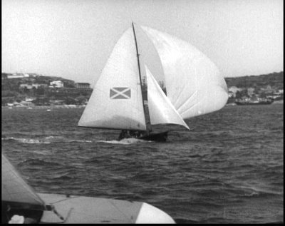
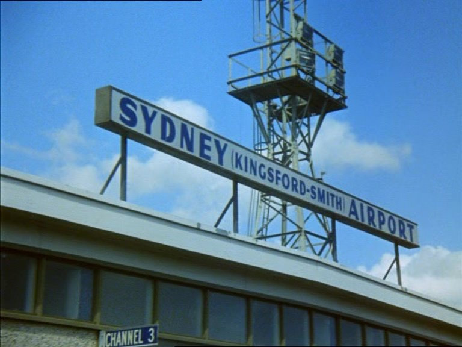
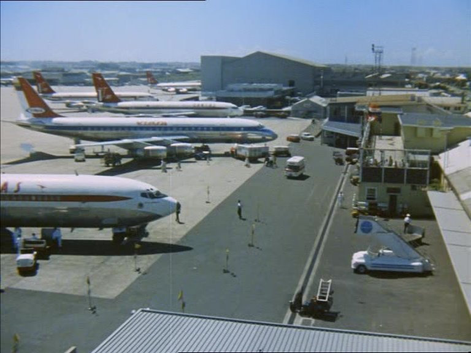
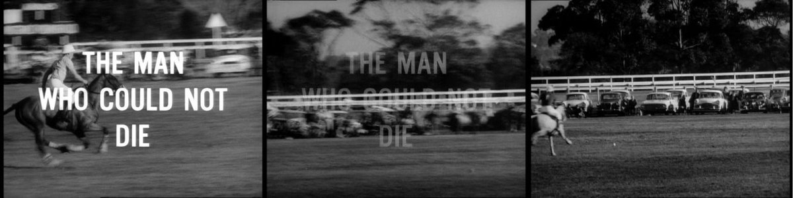
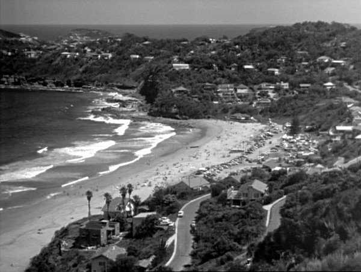

AUSTRALIA
New South Wales
Sydney
Sydney Harbour

DANGER MAN:
The Man on the Beach (Peter
Yates: 1965)
Establishing shots of boat racing near Caribbean islands
(skiff racing on Sydney
Harbour).
(Identified by Piers
Johnson, December 2009)
Sydney Kingsford Smith Airport


THE CHAMPIONS:
Happening (Cyril
Frankel: Early 1968)
Sharron, Richard, Tremayne and General Winters fly out to Sydney to the
site of the atom bomb test.
(Identified by Michael
Richardson, October 2022)
Warwick Farm Racecourse, Warwick
Farm

THE SAINT:
The Man Who Could not Die
(Roger
Moore, May 1965)
Simon Templar is at a polo match where he is to meet Nigel Perry
(footage
from newsreel played
under episode title, transposed left to right).
Whale Beach

THE SAINT:
The Spanish Cow
(John
Gilling: April 1965)
Establishing shot of beach in the South of France.
Return to
Index